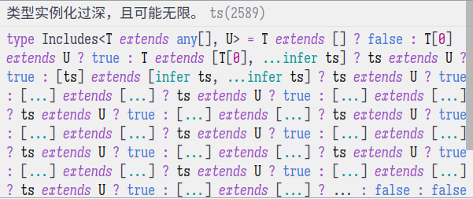

TypeScript 类型体操 02
archive time: 2023-04-28
今天继续尝试写一下类型体操
- Exclude (43)
- Awaited (189)
- If (268)
- Concat (533)
- Includes (898)
- Push (3057)
- Unshift (3060)
- Parameters (3312)
Exclude (43)
Question
Implement the built-in Exclude<T, U>
Exclude from T those types that are assignable to U
For example:
type Result = MyExclude<"a" | "b" | "c", "a">; // 'b' | 'c'
Answer
我们在文档的 Conditional Types 一文中就可以看到答案
我们可以使用 extends 关键词来判断一个类型是否符合某些条件，以此来作为 筛选
type MyExclude<T, U> = T extends U ? never : T;
这个就是我的答案，即使用 extends 来作为一个 相等 的判断，
如果符合 U 这个类型，那么就为 never，即删掉这个选项，否则就原样不动
Awaited (189)
Question
If we have a type which is wrapped type like Promise. How we can get a type which is inside the wrapped type?
For example: if we have
Promise<ExampleType>how to get ExampleType?type ExampleType = Promise<string>; type Result = MyAwaited<ExampleType>; // string
Answer
在 TypeScript 里，我们可以使用 infer 关键词来自动 填 上一个类型
即做到类似模式匹配的效果，所以我们可以使用如下方法得到 Promise 中的类型
type MyAwaited<T> = T extends PromiseLike<infer U> ? U : T;
由于没有说对于非 Promise 类型该如何处理，我这里就返回了原类型
If (268)
Question
Implement the util type
If<C, T, F>which accepts conditionC, a truthy valueT, and a falsy valueF.Cis expected to be eithertrueorfalsewhileTandFcan be any type.type A = If<true, "a", "b">; // expected to be 'a' type B = If<false, "a", "b">; // expected to be 'b'
Answer
由于这里 C 只能是 true 或者 false，所以我们可以简单的使用
C extends boolean
来作为约束，即
type If<C extends boolean, T, F> = C extends true ? T : F;
Concat (533)
Question
Implement the JavaScript
Array.concatfunction in the type system. A type takes the two arguments. The output should be a new array that includes inputs in ltr ordertype Result = Concat<[1], [2]>; // expected to be [1, 2]
Answer
在看了答案后感觉醍醐灌顶
TypeScript 里可以使用 ...T 的方式来解构一个数组，类似于其他语言的元组
这种特性同样可以作用在类型上，所以
type Concat<T extends any[], U extends any[]> = [...T, ...U];
Includes (898)
Question
Implement the JavaScript
Array.includesfunction in the type system. A type takes the two arguments. The output should be a boolean true or false.type isPillarMen = Includes<["Kars", "Esidisi", "Wamuu", "Santana"], "Dio">; // expected to be `false`
Answer
我原本想要尝试递归寻找，但是得到了 类型实例化过深，且可能无限 的错误

在看了答案之后大彻大悟，也来还可以先构造一个对象， 然后以类型作为一个键来搜索，搜到了对应值那就是存在的， 否则不存在，即
type Includes<T extends any[], U> = {
[t in T[number]]: true;
}[U] extends true
? true
: false;
Push (3057)
Question
Implement the generic version of
Array.pushFor example:
type Result = Push<[1, 2], "3">; // [1, 2, '3']
Answer
我这里的做法是直接将第一个类型解构，然后在组合形成一个新的数组
type Push<T extends any[], U> = [...T, U];
Unshift (3060)
Question
Implement the type version of
Array.unshiftFor example:
type Result = Unshift<[1, 2], 0>; // [0, 1, 2,]
Answer
这道题和上面那题是一样的，不过一个是添加到后面，一个是放到前面
type Unshift<T extends any[], U> = [U, ...T];
Parameters (3312)
Question
Implement the built-in Parameters generic without using it.
For example:
const foo = (arg1: string, arg2: number): void => {}; type FunctionParamsType = MyParameters<typeof foo>; // [arg1: string, arg2: number]
Answer
我这属于是从官方那里抄了答案
type MyParameters<T> = T extends (...args: infer P) => any ? P : never;
重点在于对于函数类型，如何去匹配，或者说推断（infer）类型，
函数的参数可以使用 (...args: infer P) 的形式来表示
我一开始卡在了参数的表示上，没想到 TypeScript 的参数类型是包含参数的名称的， 一直试图把整个参数作为类型，而没有想到使用参数的类型作为类型，感觉要长脑子了
今天算是把 Easy 部分的内容写完了，不过即便是 Easy，我大部分题目还是无法独立完成， 主要还是对于 TypeScript 本身的语法不了解，嗐